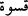
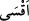

Maktûlün diriltilmesi, halkın maymun ve hınzıra dönüşmeleri, dağın üzerlerine
kaldırılması ve buna benzer; okunduğu zaman dağlar ve taşların bile dümdüz olup
yumuşayacağını belirten âyetleri ve diğer dehşetli şeyleri dinledikten sonra bile,
kalbleri bu hale geldi. İşte o kalbler, sertlik ve şiddet bakımından sanki taş gibi veya
ondan daha da serttirler.
Âyetin “Bilakis taştan daha da katıdır” bölümü temyîzdir. Buradaki “veya”
anlamındaki ( __WORD__ ), ya “bilâkis” mânâsında ( __WORD__ ) demektir; ya da muhayyerlik bildirir.
Yâni mânâ şöyle olur: “Siz bilirsiniz, isterseniz kalbleri, demir gibi sert kılın, her
hâlükârda belâya uğratılacak sizlersiniz.” Burada asıl mânâsı olan, şek bildiren “veya”
anlamına almadık, bu mânâyı aldık. Çünkü asıl mânâ alınsaydı, -hâşâ- Cenâb-ı Hakk’ın
ilmine halel gelmiş olurdu.
Eğer “Niçin âyette “kasvet” ( __WORD__ ) kelimesinin ism-i tafdîli olan “aksa” ( __WORD__ )
kelimesi alınmadı da onun fiil-i taaccübü olan “eşeddü kasve” ( __WORD__ ) “kasâvet
bakımından pek şiddetli” şekli alındı?” diyecek olursan, derim ki: Bu sîga ism-i
tafdîlden daha açık ve şiddete delâlet açısından daha kuvvetlidir. Çünkü fiil-i taaccüb
kullanılınca zâten mâhiyeti îtibârıyla şiddeti içeren “kasvet” kelimesine bir de “şiddet”
eklenmiş oluyor ki bu daha vurguludur. Oysa “kasvet”; tek zikredilip “aksâ” ( __WORD__ )
denseydi, sadece o kelimenin mâhiyetiyle bir şiddet ifâde edilmiş olacaktı.
Kalblerin sert maddelerden sadece taşa benzetilip diğer demir tunç gibi maddelere
benzetilmemesinde de bir hikmet vardır: Çünkü demir yumuşamaya elverişlidir; ateş
karşısında yumuşar, nitekim Hz. Dâvud’a da yumuşatılmıştır. Kezâ tunç da böyledir ve
bu yüzden bunlardan kap-kacak yapılır. Oysa taşı ne ateş; ne de başka bir şey
yumuşatamaz. Bu yüzden kâfirin kalbi taşa benzetilmiştir. Allah bilir ama bu durum,
Allah’ın, kendilerinden îmânın sâdır olmayacağını bildiği topluluklar hakkında
zikredilmiştir.
Âyetin “Çünkü taşlardan öylesi var ki içinden ırmaklar fışkırır.” kısmı onların
kalblerinin taştan daha katı olduğunu beyân etmekte, “taştan daha katıdır” bölümünü
tasdîk etmektedir. “Taşlardan, içerisinde büyük miktarda suların gittiği ve aktığı geniş
tüneller bulunanlar vardır”.
“Yine onların arasında, yarılıp da içinden su kaynayanlar vardır.” kısmında
“Yarılma” kelimesinin aslı ( __WORD__ ) ’dur. Bir şeyde yarıklar açmak mânâsına gelir.
“Suyun çıkması” ise onun genişliğine veya derinliğine yarılması ve onlardan su çıkması
demektir.
“Yine o taşlar içerisinde Allah korkusundan yuvarlananlar vardır.” Yâni dağların tâ
tepesinden dibine kadar yuvarlanarak inerler. “Haşyet”: “Allah’dan bilerek korkmak”
demektir. Taşların bu hareketleri haşyetten değildir. Bu kelime burda, taşların Allah’a
boyun eğip emrinin hâricine çıkmadıklarını mecâzen anlatmıştır. Oysa yahûdîlerin
kalbleri -bildikleri halde- ne boyun eğerek yumuşar, ne korkar, ne de emrolunduğu şeyi
yapar.